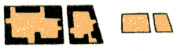
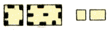
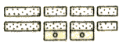
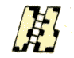
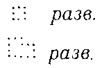
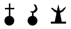
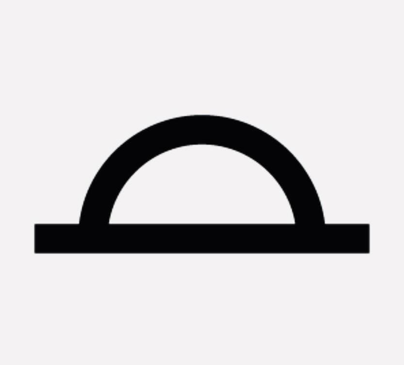
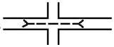
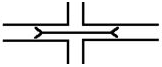
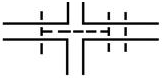

Кварталы

Кварталы с преобладанием огнестойких строений

Кварталы с преобладанием неогнестойких строений

Разрушенные и полуразрушенные кварталы

Непроезжие участки улиц (только на карте масштаба 1:25000)
Жилые и нежилые строения в кварталах, в населённых пунктах с бессистемной застройкой, а также отдельно расположенные строения
Выдающиеся огнестойкие строения
Отдельно расположенные дворы

Разрушенные и полуразрушенные строения
Церковь

Церковь, мечеть, часовни и др. молельные дома

Стоянки юрт, чумов и т.п.
Тунели

Туннели на улицах для движения транспорта

Эстакады на улицах для движения транспорта

Подземные переходы